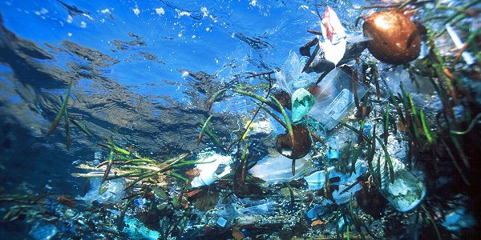
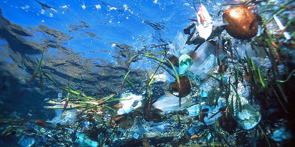
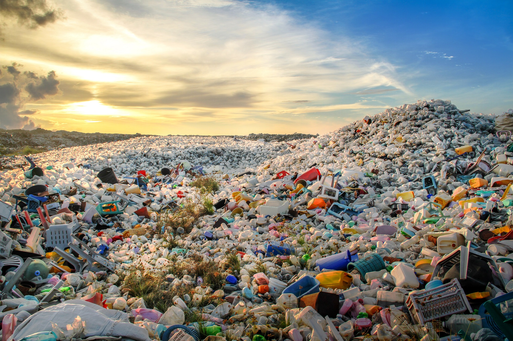
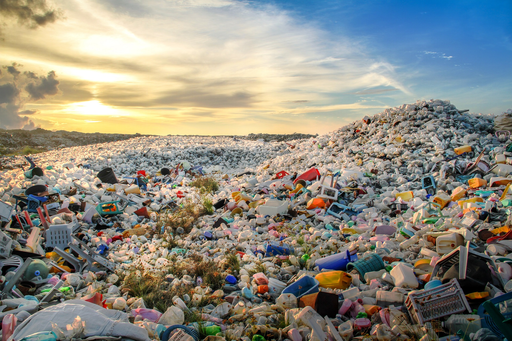

 



Mr. Trash Wheel est le surnom donné à une machine installée en 2014 à l'embouchure de la rivière
John Falls dans le port de Baltimore. C'est en partie grace à lui si la propreté des eaux du port de Baltimore s'est grandement améliorée, la pollution ne s'est pas tarie pour autant et des quantités considérables de déchets continuent d'atterrir dans la nature. C'est pourquoi le Waterfront Partnership of Baltimore utilise maintenant les données issues du travail de la machine pour proposer des projets de loi. Ce n'est donc pas une solution qui nous empêche d'adopter un comportement éco-citoyen.
Cependant, le souhait le plus cher des deux créateurs serait que l'on se passe de leur machine et que les gens cessent de jeter tout et n'importe quoi dans la nature. Elle mérite en effet d'être traitée autrement, avec un peu plus de respect, pour le bien de tous.
Pour la petite histoire, les habitants de Baltimore ont complètement adopté leur nouveau concitoyen, au point d'en faire des t-shirts

Ce collecteur de déchets fonctionne uniquement à l'aide d'énergies
renouvelables : l'énergie solaire captée grâce à des panneaux photovoltaïques et l'énergie hydraulique captée
grâce à la roue et le courant de la rivière. Il s'inscrit donc parfaitement dans les critères du développement durable.
Situé en aval du courant, Mr Trash Wheel récupère les déchets flottants avant qu'ils n'atteignent l'océan Atlantique. Ces détritus sont récupérés par un bras, puis remontés sur un tapis mécanique et « avalés » par un conteneur qui, une fois plein, est remplacé.
.
Mr Trash Wheel a collecté dans les eaux presque 500.000 kilogrammes de déchets de toutes sortes depuis mai 2014. Dans le détail ceci représente : notamment plus de 372.000 bouteilles en plastique, 460.000 containers en polystyrène, près de neuf millions de mégots de cigarettes, 6.500 bouteilles en verre, 260.000 sacs plastiques et 340.000 paquets de chips. Chaque année, Mr. Trash Wheel remplit entre 70 et 100 containers.